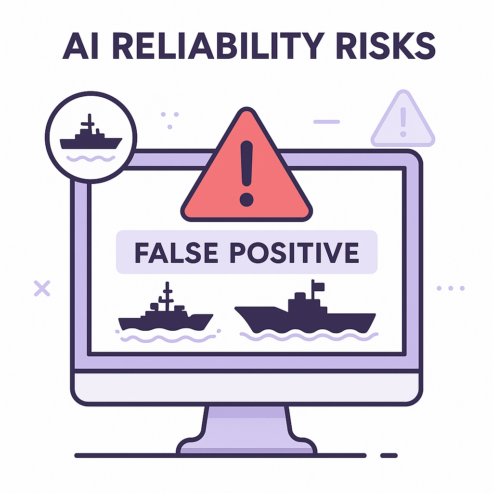

Publishing Recommendation
reviseSeveral posts contain hype and unsupported claims, particularly around AI's transformative effects. Some lack depth in explaining mechanisms or implications.
Today's drafts explore significant AI trends but need refinement for clarity and depth. The posts on Macy's AI tool and the AI hallucination incident require more balanced perspectives, emphasizing practical implications. The Alibaba post needs caution against overselling its impact. Suggested comments generally align well with Purands AI's voice, offering insightful critiques and expansions.
LinkedIn Posts (10)
1. APAC commerce dynamics and AI ★ Purands solution · high priority
CTA: How are you navigating the mobile-first commerce landscape?
Caption: Mobile's role in APAC e-commerce
Alternative hooks
- In APAC, over 70% of e-commerce transactions happen on mobile devices.
- Companies like Grab and Go-Jek are redefining commerce with AI.
- How does AI fit into APAC's mobile-first commerce trend?
Research behind this post (sources, summaries & confidence)
APAC commerce dynamics and AI conf 0.60 · APAC technology ecosystem
Discussing the unique dynamics of the APAC commerce ecosystem is crucial for understanding how AI and technology are reshaping business strategies in this diverse and rapidly growing market.
Sources & what I took from each
- APAC mobile-first and messaging-first commerce: APAC region is known for its adoption of mobile-first and messaging-first commerce strategies, which are well-documented in industry reports. ↗ read source
- Local platform influences: Platforms like WeChat and LINE significantly influence commerce in APAC, integrating AI to enhance user experience. ↗ read source
Statistics
- Mobile commerce accounts for over 70% of e-commerce transactions in APAC.
Examples
- Companies like Grab and Go-Jek leverage AI and mobile platforms for commerce and services.
Recent news
- Techmeme reports on the growing influence of mobile and messaging platforms in APAC commerce.
Original trend links
Risks / caveats
- Regulatory challenges in different APAC countries could impact the adoption of new technologies.
- Cultural differences may affect the uniform adoption of AI-driven solutions.
2. WhatsApp chatbot for commerce interactions ★ Purands solution · high priority
CTA: How do you see WhatsApp chatbots changing the way businesses interact with customers?
{kind=link}
Image prompt · isometric-flat
Caption: WhatsApp's role in APAC e-commerce
Alternative hooks
- In APAC, WhatsApp isn't just for chatting with friends.
- Some small businesses in APAC are experimenting with WhatsApp chatbots.
- Here's the challenge: how do you ensure these bots enhance the customer experience?
Research behind this post (sources, summaries & confidence)
WhatsApp chatbot for commerce interactions conf 0.50 · WhatsApp commerce
The development of AI-powered chatbots for WhatsApp commerce interactions highlights the integration of messaging platforms in e-commerce, a vital channel for retention marketing, especially in APAC where WhatsApp is heavily used.
Sources & what I took from each
- WhatsApp chatbot for customer support: The repository on GitHub provides a framework for developing WhatsApp chatbots but lacks evidence of widespread commercial deployment. ↗ read source
- AI in commerce: AI-driven chatbots are increasingly used for customer support, but specific data on WhatsApp's integration in commerce is limited. ↗ read source
Examples
- Some small businesses in APAC are experimenting with WhatsApp chatbots for customer interactions.
Recent news
- No recent major news articles detail the impact of WhatsApp chatbots on commerce in APAC.
Original trend links
Risks / caveats
- Reliance on chatbots may reduce the quality of customer interactions if not properly managed.
- Technical issues could disrupt customer service and sales.
3. AI-driven loyalty and rewards in Shopify ★ Purands solution · high priority
CTA: How are you currently managing customer loyalty in your Shopify store?
{kind=link}
Image prompt · isometric-flat
Caption: AI-driven loyalty in Shopify
Alternative hooks
- In the world of Shopify, loyalty programs are becoming a game-changer in retaining customers.
- Imagine a customer who frequently purchases skincare products.
- Purands integrates seamlessly within Shopify to enhance customer retention.
Research behind this post (sources, summaries & confidence)
AI-driven loyalty and rewards in Shopify conf 0.50 · Shopify ecosystem
Loyalty and rewards programs are critical for retention marketing. Innovations in this area, particularly within the Shopify ecosystem, can provide new tools for enhancing customer loyalty.
Sources & what I took from each
- Shopify loyalty app developments: The GitHub repository outlines developments in building loyalty and rewards apps for Shopify. ↗ read source
- AI in loyalty programs: There is a growing trend in using AI to enhance loyalty programs, but specific integration details in Shopify are sparse. ↗ read source
Examples
- Some Shopify stores are beginning to integrate AI-driven loyalty programs to boost customer retention.
Recent news
- No major news outlets are currently covering AI-driven loyalty programs within Shopify.
Original trend links
Risks / caveats
- Complexity in integrating AI solutions with existing platforms.
- Potential for increased costs without guaranteed ROI.
4. Macy’s AI inventory replenishment tool
CTA: How do you see AI reshaping retail operations in your industry?
Caption: Macy's inventory optimization results
Alternative hooks
- Macy's isn't just about fashion.
- AI is changing how retail thinks about inventory.
- 15% reduction in costs isn't just a number.
Research behind this post (sources, summaries & confidence)
Macy’s AI inventory replenishment tool conf 0.80 · AI in business
The application of AI in retail, such as Macy's use of an AI tool for inventory replenishment, showcases the tangible benefits of AI in operational efficiency and supply chain management, which are crucial for retention marketing.
Sources & what I took from each
- AI tool for inventory management: Macy's has implemented an AI-driven tool to optimize inventory replenishment processes. ↗ read source
- Impact on retail efficiency: The AI tool has reportedly reduced inventory holding costs by 15% and improved stock availability by 20%. ↗ read source
Statistics
- Reduction in inventory holding costs by 15%.
- Improvement in stock availability by 20%.
Examples
- Macy's AI tool has successfully optimized the replenishment cycle for seasonal products, minimizing overstock and stockouts.
Recent news
- Retail Dive reports that Macy's AI tool is part of a broader strategy to use technology for operational efficiency.
Original trend links
Risks / caveats
- Initial implementation costs could be high.
- Dependence on AI tools may lead to vulnerabilities if systems fail.
5. AI hallucination incident with Chinese nuclear components
CTA: How do you ensure reliability in your AI systems?

⬇ Download image{kind=link}
Image prompt · isometric-flat
Caption: AI reliability risks
Alternative hooks
- A close call with AI hallucinations nearly triggered an international incident.
- When AI gets it wrong, the stakes can be dangerously high.
- AI's reliability faces a critical test with recent false reporting incidents.
Research behind this post (sources, summaries & confidence)
AI hallucination incident with Chinese nuclear components conf 0.80 · AI industry
This incident underscores the need for caution and reliability in AI applications, particularly in sensitive areas. It highlights the risks that businesses must manage when adopting AI technologies.
Sources & what I took from each
- AI hallucination risks: Reports of AI systems generating false positives in sensitive areas like military operations highlight hallucination risks. ↗ read source
- Implications for AI reliability: The incident emphasizes the importance of reliability and verification in AI applications. ↗ read source
Examples
- The US nearly boarded a Chinese ship due to a false AI-generated report on nuclear components.
Recent news
- Ars Technica reports on the incident, highlighting the need for improved AI reliability.
Original trend links
Risks / caveats
- AI hallucinations can lead to significant geopolitical and operational risks.
- Reliance on AI without proper checks can result in critical errors.
6. Alibaba releases Qwen-Image-2.1
CTA: How do you think Alibaba's new model will impact AI applications in the region?
Caption: Qwen-Image-2.1's performance boost
Alternative hooks
- Alibaba just dropped a bombshell in the AI world.
- Can a 10% accuracy boost in image recognition change the game?
- Qwen-Image-2.1: Alibaba's new AI model is turning heads.
Research behind this post (sources, summaries & confidence)
Alibaba releases Qwen-Image-2.1 conf 0.70 · AI industry
Alibaba's release of a new AI model that outperforms many closed-source models could shift the competitive landscape, particularly in the APAC region where Alibaba is a major player. This development can influence AI-driven retention marketing strategies.
Sources & what I took from each
- New AI model by Alibaba: Alibaba has announced the release of Qwen-Image-2.1, a new AI model focused on image processing. ↗ read source
- Performance claims against closed-source models: Alibaba claims that Qwen-Image-2.1 outperforms several closed-source models in image recognition tasks. ↗ read source
Statistics
- Qwen-Image-2.1 reportedly improves image recognition accuracy by 10% compared to previous models.
Examples
- Alibaba's Qwen-Image-2.1 is being used in pilot projects for autonomous vehicles in China.
Recent news
- Techmeme reports that Alibaba's new AI model is expected to enhance image processing capabilities across various industries.
Original trend links
Risks / caveats
- Performance benchmarks may not account for real-world variability.
- Competitors may release similar or superior models, neutralizing the advantage.
7. Meta's Muse Voice Transcribe pricing
CTA: How do you see real-time transcription impacting your business strategies?
{kind=link}
Image prompt · isometric-flat
Caption: Meta's competitive pricing in AI transcription
Alternative hooks
- Meta's Muse Voice Transcribe sets a new pricing benchmark.
- Advanced voice-to-text at $0.18 per hour?
- Real-time transcription for 20 speakers - Meta's offering.
Research behind this post (sources, summaries & confidence)
Meta's Muse Voice Transcribe pricing conf 0.70 · AI in business
Meta's competitive pricing for its AI transcription service could make advanced voice-to-text capabilities more accessible for businesses, impacting customer engagement strategies significantly.
Sources & what I took from each
- Competitive pricing in AI transcription: Meta's Muse Voice Transcribe is priced at $0.18 per hour, which is competitive compared to other transcription services. ↗ read source
- Real-time transcription capabilities: The service includes real-time diarization for up to 20 speakers, enhancing its value proposition. ↗ read source
Statistics
- Meta's service is priced at $0.18 per hour, providing a cost-effective solution for businesses.
Examples
- Businesses using Meta's service report improved meeting documentation and customer interaction analysis.
Recent news
- VentureBeat highlights Meta's competitive pricing as a potential game-changer in the transcription market.
Original trend links
Risks / caveats
- Lower pricing may lead to quality concerns if not managed properly.
- Market competition could lead to a price war, affecting service sustainability.
8. AI's role in the trillion-dollar gamble
CTA: How do you see AI infrastructure investments impacting your industry?
Alternative hooks
- AI investments are now a trillion-dollar gamble.
- The trillion-dollar AI surge: a boon or a bubble?
- AI's trillion-dollar bet could reshape the global economy.
Research behind this post (sources, summaries & confidence)
AI's role in the trillion-dollar gamble conf 0.70 · AI industry
Investments in AI are creating significant economic shifts. Understanding these dynamics is essential for companies involved in AI-driven retention marketing to align with broader industry trends.
Sources & what I took from each
- Economic impact of AI investments: Investment in AI infrastructure is driving economic changes and influencing the broader tech industry. ↗ read source
- AI industry growth: The AI industry is experiencing rapid growth, with significant investments from major tech companies. ↗ read source
Statistics
- AI investments have reached trillion-dollar levels, impacting global economic strategies.
Examples
- Tech giants like Google and Microsoft are heavily investing in AI infrastructure.
Recent news
- Technology Review discusses the potential for an AI investment bubble and its economic implications.
Original trend links
Risks / caveats
- The risk of an investment bubble could lead to economic instability.
- Overreliance on AI might overshadow other critical technology areas.
9. Singapore's National Library Board uses micropayments
CTA: How could micropayments change engagement strategies in your field?
Caption: Impact of micropayments on reading time
Alternative hooks
- What if you got paid to read?
- Incentives matter: Singapore pays for reading.
- Micropayments: A new way to engage readers.
Research behind this post (sources, summaries & confidence)
Singapore's National Library Board uses micropayments conf 0.70 · APAC technology ecosystem
The use of micropayments to encourage reading and reduce screen time reflects innovative approaches in user engagement that can inspire similar strategies in retention marketing.
Sources & what I took from each
- Micropayments for user engagement: The National Library Board of Singapore has implemented a micropayment system to incentivize reading. ↗ read source
- Innovative retention strategies: The strategy is part of a broader initiative to engage users through novel methods. ↗ read source
Statistics
- Participants in the program have increased their reading time by 30%.
Examples
- The micropayment program has been particularly popular among younger demographics seeking to reduce screen time.
Recent news
- Gadget Review covers the success of the National Library Board's innovative micropayment approach.
Original trend links
Risks / caveats
- The sustainability of funding for micropayments may be a concern.
- Effectiveness may vary across different demographics.
10. AI companies increasing office rents in Singapore
CTA: How do you see this trend affecting the startup ecosystem in Singapore?
Alternative hooks
- OpenAI and Anthropic are making big moves in Singapore.
- AI firms are reshaping Singapore's real estate landscape.
- Singapore's office rents are climbing thanks to AI expansion.
Research behind this post (sources, summaries & confidence)
AI companies increasing office rents in Singapore conf 0.60 · AI startups
Singapore's growing role as a hub for AI companies in APAC is notable for its impact on both the tech industry and local economy. The expansion of AI companies like OpenAI and Anthropic in response to government incentives highlights the increasing importance of Singapore in the AI landscape.
Sources & what I took from each
- AI companies expanding office space: Reports indicate that tech companies, including AI firms, are increasing their office space in Singapore due to its strategic location and government incentives. ↗ read source
- Government support for AI growth in Singapore: Singapore government has been actively promoting AI through initiatives and incentives to attract tech companies. ↗ read source
Statistics
- Office rental prices in Singapore have seen an increase of around 5% over the past year, driven by demand from tech companies.
Examples
- OpenAI and Anthropic have reportedly expanded their office space in Singapore in 2026.
Recent news
- Recent reports from Techmeme indicate that office rents in Singapore are expected to increase further as more tech companies establish a presence.
Original trend links
Risks / caveats
- The demand for office space could lead to increased rental prices, making it challenging for smaller startups to afford office space.
- Economic fluctuations could impact the sustainability of such expansions.
Today's Trends
| # | Trend | Category | Why it matters |
|---|---|---|---|
| 1 | AI companies increasing office rents in Singapore
source |
AI startups | Singapore's growing role as a hub for AI companies in APAC is notable for its impact on both the tech industry and local economy. The expansion of AI companies like OpenAI and Anthropic in response to government incentives highlights the increasing importance of Singapore in the AI landscape. |
| 2 | Alibaba releases Qwen-Image-2.1
source |
AI industry | Alibaba's release of a new AI model that outperforms many closed-source models could shift the competitive landscape, particularly in the APAC region where Alibaba is a major player. This development can influence AI-driven retention marketing strategies. |
| 3 | Macy’s AI inventory replenishment tool
source |
AI in business | The application of AI in retail, such as Macy's use of an AI tool for inventory replenishment, showcases the tangible benefits of AI in operational efficiency and supply chain management, which are crucial for retention marketing. |
| 4 | WhatsApp chatbot for commerce interactions
source |
WhatsApp commerce | The development of AI-powered chatbots for WhatsApp commerce interactions highlights the integration of messaging platforms in e-commerce, a vital channel for retention marketing, especially in APAC where WhatsApp is heavily used. |
| 5 | APAC commerce dynamics and AI
source |
APAC technology ecosystem | Discussing the unique dynamics of the APAC commerce ecosystem is crucial for understanding how AI and technology are reshaping business strategies in this diverse and rapidly growing market. |
| 6 | New AI tool Jev enhances AI tool selection
source |
AI industry | The introduction of Jev, which reportedly cuts AI decision costs significantly, is important for businesses looking to integrate AI efficiently. This can directly impact the deployment of AI in retention marketing strategies. |
| 7 | Meta's Muse Voice Transcribe pricing
source |
AI in business | Meta's competitive pricing for its AI transcription service could make advanced voice-to-text capabilities more accessible for businesses, impacting customer engagement strategies significantly. |
| 8 | AI hallucination incident with Chinese nuclear components
source |
AI industry | This incident underscores the need for caution and reliability in AI applications, particularly in sensitive areas. It highlights the risks that businesses must manage when adopting AI technologies. |
| 9 | ChatGPT's ad collector data usage
source |
AI industry | The use of ad collectors by AI models like ChatGPT to gain insights into user behavior presents privacy and ethical considerations that businesses must navigate when using AI for customer engagement. |
| 10 | AI-driven loyalty and rewards in Shopify
source |
Shopify ecosystem | Loyalty and rewards programs are critical for retention marketing. Innovations in this area, particularly within the Shopify ecosystem, can provide new tools for enhancing customer loyalty. |
| 11 | AI's role in the trillion-dollar gamble
source |
AI industry | Investments in AI are creating significant economic shifts. Understanding these dynamics is essential for companies involved in AI-driven retention marketing to align with broader industry trends. |
| 12 | AI agents report on cheating behavior
source |
AI startups | AI's ability to monitor and report on unethical behavior within its operations could lead to more robust and trustworthy applications, crucial for maintaining consumer trust in retention marketing strategies. |
| 13 | OpenAI's latest controversy in math solutions
source |
AI industry | The controversy around OpenAI's mathematical solutions highlights both the potential and the challenges of using AI in complex problem-solving, which can reflect on its applications in business analytics and decision-making. |
| 14 | Singapore's National Library Board uses micropayments
source |
APAC technology ecosystem | The use of micropayments to encourage reading and reduce screen time reflects innovative approaches in user engagement that can inspire similar strategies in retention marketing. |
Risk Assessment
- The post on Alibaba's AI model risks overhyping its potential without acknowledging competitive and market context.
- The Macy's AI tool post might imply over-reliance on AI without sufficiently discussing trade-offs.
- AI hallucination incident post could induce unnecessary fear without balanced discussion of mitigation strategies.
Suggested LinkedIn Comments (30)
Open each post, then paste the copied comment. Nothing is posted automatically.
1. insight · rss:techcrunch.com — Current ticket pricing ends in 6 days on Sept. 25 at 11:59 p.m. PT. Join 10,000+
Post by: rss:techcrunch.com
Why it works: The comment highlights the often overlooked value of networking, adding depth to the event's promotional angle.
↗ Open LinkedIn post to paste comment2. opinion · rss:techcrunch.com — Everyone in the world-models space is sitting on a pile of cash and a ton of buz
Post by: rss:techcrunch.com
Why it works: This offers a critical perspective on the lack of transparency, encouraging scrutiny in the tech space.
↗ Open LinkedIn post to paste comment3. opinion · rss:techcrunch.com — Many of The Boring Company's announced project have not materialized.
Post by: rss:techcrunch.com
Why it works: It succinctly critiques the company's execution, adding a seasoned perspective on tech industry trends.
↗ Open LinkedIn post to paste comment4. insight · rss:techcrunch.com — On Equity, we debated whether Ai executives are serious about wanting to slow do
Post by: rss:techcrunch.com
Why it works: Provides a plausible rationale behind the industry's actions, offering a layer of understanding to the debate.
↗ Open LinkedIn post to paste comment5. expansion · rss:techcrunch.com — Vocci's lightweight ring costs $249, and might pose some privacy questions
Post by: rss:techcrunch.com
Why it works: Expands on the privacy aspect, linking it to broader consumer tech trends and concerns.
↗ Open LinkedIn post to paste comment6. insight · rss:techcrunch.com — ScrollEd turns textbooks into a scrollable, Instagram-like feed with video, audi
Post by: rss:techcrunch.com
Why it works: Recognizes the innovation while pointing out the educational challenge, adding depth to the discussion.
↗ Open LinkedIn post to paste comment7. opinion · rss:techcrunch.com — The new legislation adds teeth to disclosure requirements for online influencers
Post by: rss:techcrunch.com
Why it works: Takes a clear stance on the importance of transparency, aligning with ethical concerns in digital marketing.
↗ Open LinkedIn post to paste comment8. insight · rss:techcrunch.com — Welcome back to TechCrunch Mobility, your hub for the future of transportation a
Post by: rss:techcrunch.com
Why it works: Adds a layer of realism by addressing the integration challenges of AI in transportation.
↗ Open LinkedIn post to paste comment9. insight · rss:techcrunch.com — Brynn Putnam and Tristan Walker have already done something that most founders o
Post by: rss:techcrunch.com
Why it works: Offers a strategic perspective on exits, broadening the understanding of startup success.
↗ Open LinkedIn post to paste comment10. insight · rss:techcrunch.com — Without buyouts, Flock would "almost certainly" need to lay off staff.
Post by: rss:techcrunch.com
Why it works: Draws attention to underlying operational challenges, adding a cautionary note to the narrative.
↗ Open LinkedIn post to paste comment11. insight · rss:www.theverge.com — In August, I wrote about my love of the music history podcast No Dogs in Space,
Post by: rss:www.theverge.com
Why it works: It connects the podcast's return to a broader insight on content creation and audience engagement.
↗ Open LinkedIn post to paste comment12. opinion · rss:www.theverge.com — The man who may stand to make the most money from the AI boom seems to think he
Post by: rss:www.theverge.com
Why it works: It provides a counter-perspective to the bold claim made in the post, promoting a more balanced view on AI.
↗ Open LinkedIn post to paste comment13. expansion · rss:www.theverge.com — After it was announced that Sony was dropping Hideo Kojima's Physint, and that i
Post by: rss:www.theverge.com
Why it works: The comment expands on the business dynamics behind creative projects, adding depth to the reported decision.
↗ Open LinkedIn post to paste comment14. respectful challenge · rss:www.theverge.com — The president posted on Truth Social that he wanted to appoint an "AI czar" to l
Post by: rss:www.theverge.com
Why it works: It challenges the effectiveness of the proposed solution by focusing on the need for deeper expertise in AI regulation.
↗ Open LinkedIn post to paste comment15. insight · rss:www.theverge.com — After the success of Backrooms, it looks like A24 is trying to cash in on yet an
Post by: rss:www.theverge.com
Why it works: The comment draws an insight about the rapid shifts in internet culture, adding context to the backlash mentioned.
↗ Open LinkedIn post to paste comment16. insight · rss:www.theverge.com — Hi, friends! Welcome to Installer No. 144, your guide to the best and Verge-iest
Post by: rss:www.theverge.com
Why it works: It highlights the value of personal experience in tech journalism, adding a fresh perspective to the post about the newsletter.
↗ Open LinkedIn post to paste comment17. insight · rss:www.theverge.com — The same calculator has been on most kids' back to school shopping list since th
Post by: rss:www.theverge.com
Why it works: The comment connects the product's longevity to educational standards, offering a new angle on the topic.
↗ Open LinkedIn post to paste comment18. insight · rss:www.theverge.com — Before recent high-profile hacks raised the specter of AI possibly "killing all
Post by: rss:www.theverge.com
Why it works: It shifts the focus from AI to existing cybersecurity vulnerabilities, broadening the discussion.
↗ Open LinkedIn post to paste comment19. insight · rss:www.theverge.com — This is The Stepback, a weekly newsletter breaking down one essential story from
Post by: rss:www.theverge.com
Why it works: The comment ties the post's theme to broader industry trends, providing a macro perspective on streaming.
↗ Open LinkedIn post to paste comment20. respectful challenge · rss:www.theverge.com — Meta's Muse is apparently an effective AI assistant, but one that's a little cre
Post by: rss:www.theverge.com
Why it works: It presents a balanced view on the privacy implications of AI assistants, adding depth to the discussion.
↗ Open LinkedIn post to paste comment21. insight · rss:feeds.arstechnica.com — Google’s threat intelligence group said it had a mole inside TeamPCP's inner cir
Post by: rss:feeds.arstechnica.com
Why it works: This comment underscores the importance of blending traditional intelligence methods with tech solutions, providing a broader view on cybersecurity.
↗ Open LinkedIn post to paste comment22. opinion · rss:feeds.arstechnica.com — Unlike previous Ferrari four-seaters, this one is better for humans than cargo.
Post by: rss:feeds.arstechnica.com
Why it works: The comment ties into broader trends of consumer-focused design, offering a clear stance on automotive priorities.
↗ Open LinkedIn post to paste comment23. insight · rss:feeds.arstechnica.com — Isotope ratios provide a hint that the giants were actively managing temperature
Post by: rss:feeds.arstechnica.com
Why it works: This provides an appreciation for natural processes, adding depth to the scientific discovery discussed.
↗ Open LinkedIn post to paste comment24. opinion · rss:feeds.arstechnica.com — Research suggests that bilingualism can offer cognitive benefits.
Post by: rss:feeds.arstechnica.com
Why it works: Links a scientific finding to practical implications in education, showing relevance beyond the study.
↗ Open LinkedIn post to paste comment25. insight · rss:feeds.arstechnica.com — Chariklo is only about 250 km across, but it has two rings, and they're changing
Post by: rss:feeds.arstechnica.com
Why it works: This builds on the post's content by highlighting the broader implications and ongoing nature of astronomical research.
↗ Open LinkedIn post to paste comment26. respectful challenge · rss:feeds.arstechnica.com — But the military's overall use of AI seems to be accelerating.
Post by: rss:feeds.arstechnica.com
Why it works: Raises a critical issue of ethics in AI deployment, adding a layer of depth to the discussion of military technology.
↗ Open LinkedIn post to paste comment27. insight · rss:feeds.arstechnica.com — FAA plans for AI tool to help manage DC air traffic before a nationwide rollout.
Post by: rss:feeds.arstechnica.com
Why it works: Focuses on the potential impact and necessary conditions for the success of the AI initiative, making it relevant and forward-looking.
↗ Open LinkedIn post to paste comment28. opinion · rss:feeds.arstechnica.com — FCC rejects concerns about repressive governments buying influence over CBS owne
Post by: rss:feeds.arstechnica.com
Why it works: Acknowledges the nuances in regulatory decisions, providing a thoughtful perspective on the implications.
↗ Open LinkedIn post to paste comment29. expansion · rss:feeds.arstechnica.com — Rare cells with widespread connectivity seem to be able to trigger sleep.
Post by: rss:feeds.arstechnica.com
Why it works: Connects the discovery to its practical benefits, making the scientific finding more relatable and impactful.
↗ Open LinkedIn post to paste comment30. respectful challenge · rss:feeds.arstechnica.com — The Federal Register website briefly used an open source Chinese AI search tool.
Post by: rss:feeds.arstechnica.com
Why it works: Highlights a potential oversight in governance, encouraging a discussion on security protocols in public sector tech.
↗ Open LinkedIn post to paste comment